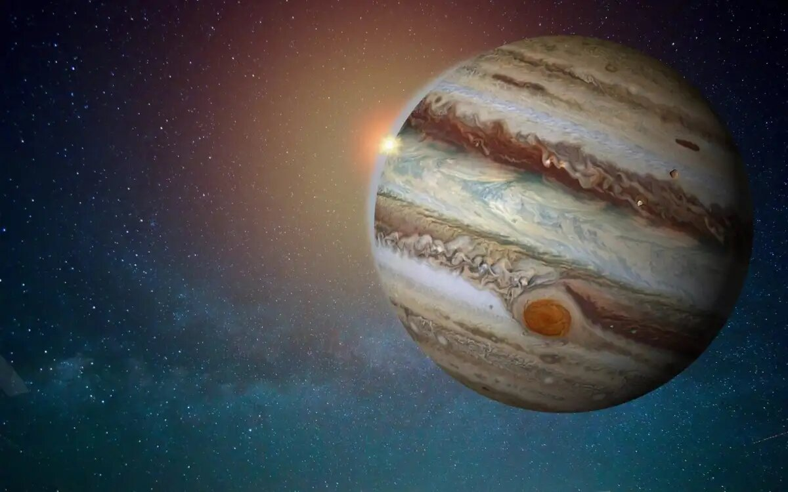
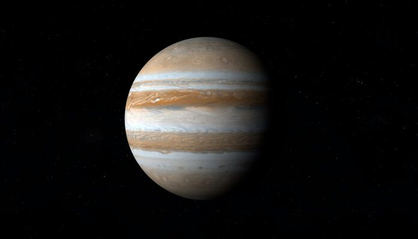

Llegaste a...
¡Júpiter, el quinto planeta del Sistema Solar!
- 


Júpiter es el quito planeta del sistema solar ( ubicado a 750 millones de kilómetros del Sol) y el más grande de este, está compuesto mayormente por gases, lo que lo transforma en un gigante gaseoso y es uno de los objetos naturales más brillantes en un cielo nocturno despejado, superado solo por la Luna, Venus y algunas veces Marte.
Júpiter es el planeta con mayor masa del sistema solar, equivale a unas 2,48 veces la suma de las masas de todos los demás planetas juntos. A pesar de ello, no es el planeta más masivo que se conoce, más de un centenar de planetas extrasolares que han sido descubiertos tienen masas similares o superiores a la de Júpiter. También posee la velocidad de rotación más rápida de los planetas del sistema solar gira en poco menos de diez horas sobre su eje, lo que hace que los días duren la mitad de lo que duran en el planeta Tierra.
A pesar de ser mucho más grande que la Tierra (con un diámetro once veces mayor), es considerablemente menos denso. El volumen de Júpiter es equivalente al de 1321 tierras, pero su masa es solamente 318 veces mayor. Una teoría dice que el diámetro de este planeta disminuye muy lentamente 2 cm por año, disminuyendo también el calor que emite, según esta teoría, tras su formación, Júpiter era mucho más caliente y presentaba casi el doble de su actual diámetro. A pesar de esto el planeta aun irradia más calor del que recibe de la escasa luz solar que le llega.
¿Te gustaría ver una simulación hecha por la NASA? ¡Hacé click acá!
